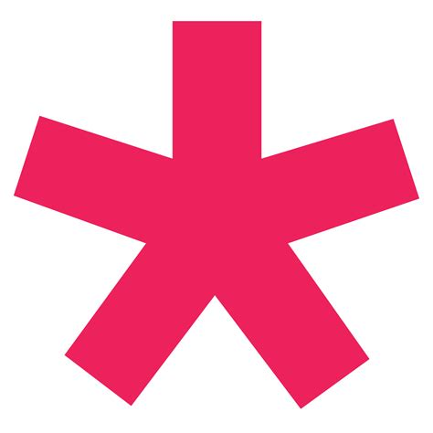

Sites para programação:
Sim tem como programar no navegador e é bem mais prático já que você pode testar se seu código funcionou.
P5js:

Já passou raiva com o p5js? Legal! Eu também e muito, mas acredite ele é o site de programação mais amigável dessa lista.
Google Colab:

O google colab criado pela google é um editor de texto web do google que tem como principal linguagem o python
uma das linguagem de programação mais fáceis de aprender, já que é uma linguagem um pouco mais humana, mas não tem apenas python
também possui linguagens como javascript, java C e C++.
html.com:

o site html.com é um site onde você pode aprender algumas coisas sobre html.
python wiki:

Literalmente a wiki sobre a linguagem de programação python para quem quiser começar na programação de forma fácil.
exercism:
O site exercism é um site onde você pode fazer exercícios para entender a lógica de programação.
3v4l:
É um site onde você pode testar seus códigos em PHP (Infelizmente só tem para php).
Quickref.me:
É um site onde você te ensina como funciona os comandos de cada linguagem de programação, muito bom para se caso você esqueça a função
do comando.